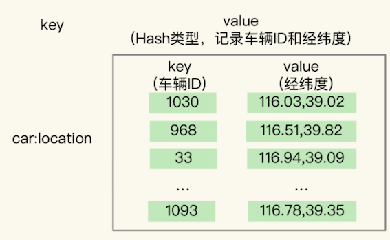
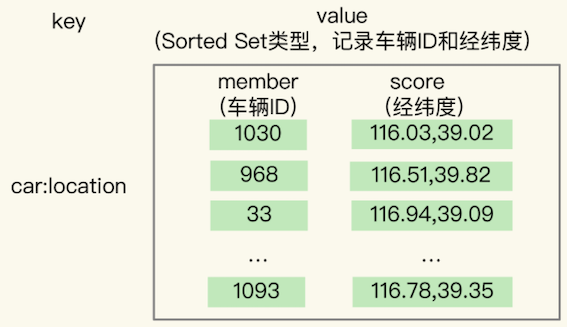
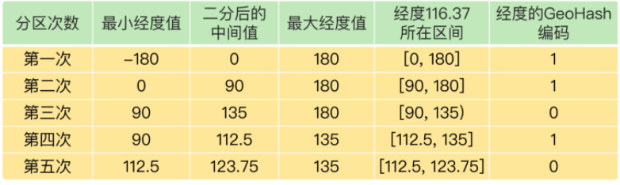
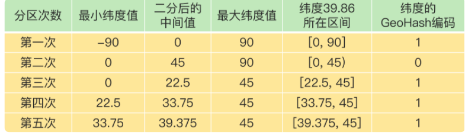
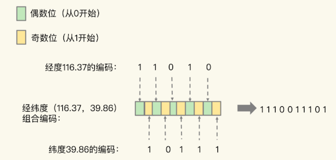
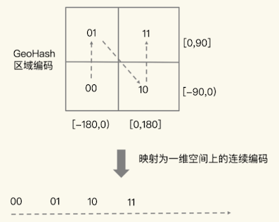
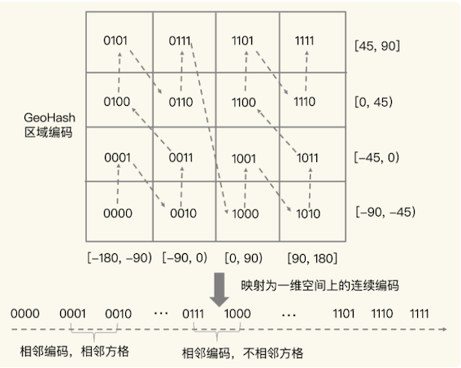
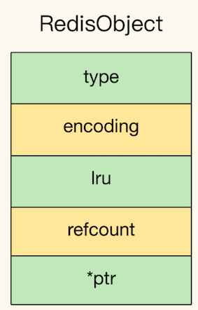

第三节 GEO，一种可以实现LBS服务的数据结构
上一节讲了 5 大基本数据类型：String、List、Hash、Set 和 Sorted Set，它们可以满足大多数的数据存储需求，但是在面对海量数据统计时，它们的内存开销很大，而且对于一些特殊的场景，它们是无法支持的。
Redis 还提供了 3 种扩展数据类型，分别是 Bitmap、HyperLogLog 和 GEO
1、面向 LBS 应用的 GEO 数据类型
基于位置信息服务（Location-Based Service，LBS）的应用。LBS 应用访问的数据是和人或物关联的一组经纬度信息，而且要能查询相邻的经纬度范围，GEO 就非常适合应用在 LBS 服务的场景中，我们来看一下它的底层结构。
2、GEO 的底层结构
2-1 LBS 应用纬度的存取特点
一般来说，在设计一个数据类型的底层结构时，我们首先需要知道，要处理的数据有什么访问特点。所以，我们需要先搞清楚位置信息到底是怎么被存取的。
以叫车服务为例，来分析下 LBS 应用中经纬度的存取特点。
- 每一辆网约车都有一个编号（例如 33），网约车需要将自己的经度信息（例如 116.034579）和纬度信息（例如 39.000452 ）发给叫车应用。
- 用户在叫车的时候，叫车应用会根据用户的经纬度位置（例如经度 116.054579，纬度 39.030452），查找用户的附近车辆，并进行匹配。
- 等把位置相近的用户和车辆匹配上以后，叫车应用就会根据车辆的编号，获取车辆的信息，并返回给用户。
一辆车（或一个用户）对应一组经纬度，并且随着车（或用户）的位置移动，相应的经纬度也会变化。
数据记录模式属于一个 key（例如车 ID）对应一个 value（一组经纬度）。当有很多车辆信息要保存时，就需要有一个集合来保存一系列的 key 和 value。
Hash 集合类型可以快速存取一系列的 key 和 value，正好可以用来记录一系列车辆 ID 和经纬度的对应关系，所以，我们可以把不同车辆的 ID 和它们对应的经纬度信息存在 Hash 集合中

Hash 类型的 HSET 操作命令，会根据 key 来设置相应的 value 值，所以，我们可以用它来快速地更新车辆变化的经纬度信息。
2-2 Sorted Set 类型
Sorted Set 类型也支持一个 key 对应一个 value 的记录模式，其中，key 就是 Sorted Set 中的元素，而 value 则是元素的权重分数。更重要的是，Sorted Set 可以根据元素的权重分数排序，支持范围查询。
实际上，GEO 类型的底层数据结构就是用 Sorted Set 来实现的
用 Sorted Set 来保存车辆的经纬度信息时，Sorted Set 的元素是车辆 ID，元素的权重分数是经纬度信息，如下图所示：

Sorted Set 元素的权重分数是一个浮点数（float 类型），而一组经纬度包含的是经度和纬度两个值，是没法直接保存为一个浮点数的，那具体该怎么进行保存呢？
这就要用到 GEO 类型中的 GeoHash 编码了。
3、GeoHash 的编码方法
为了能高效地对经纬度进行比较，Redis 采用了业界广泛使用的 GeoHash 编码方法，这个方法的基本原理就是“二分区间，区间编码”。
对一组经纬度进行 GeoHash 编码时，我们要先对经度和纬度分别编码，然后再把经纬度各自的编码组合成一个最终编码。
3-1 经度和纬度的单独编码过程
对于一个地理位置信息来说，它的经度范围是[-180,180]。GeoHash 编码会把一个经度值编码成一个 N 位的二进制值，我们来对经度范围[-180,180]做 N 次的二分区操作，其中 N 可以自定义。
在进行第一次二分区时，经度范围[-180,180]会被分成两个子区间：[-180,0) 和[0,180]（我称之为左、右分区）。
此时，我们可以查看一下要编码的经度值落在了左分区还是右分区。
如果是落在左分区，我们就用 0 表示；如果落在右分区，就用 1 表示。这样一来，每做完一次二分区，我们就可以得到 1 位编码值。
我们再对经度值所属的分区再做一次二分区，同时再次查看经度值落在了二分区后的左分区还是右分区，按照刚才的规则再做 1 位编码。当做完 N 次的二分区后，经度值就可以用一个 N bit 的数来表示了。
举个例子，假设我们要编码的经度值是 116.37，我们用 5 位编码值（也就是 N=5，做 5 次分区）。
- 我们先做第一次二分区操作，把经度区间
[-180,180]分成了左分区[-180,0)和右分区[0,180]，此时，经度值116.37是属于右分区[0,180]，所以，我们用 1 表示第一次二分区后的编码值。 * 第二次二分区：把经度值116.37所属的[0,180]区间，分成[0,90)和[90, 180]。 - 此时，经度值
116.37还是属于右分区[90,180]，所以，第二次分区后的编码值仍然为1。 - 等到第三次对
[90,180]进行二分区，经度值116.37落在了分区后的左分区[90, 135)中，所以，第三次分区后的编码值就是 0。
按照这种方法，做完 5 次分区后，我们把经度值 116.37 定位在[112.5, 123.75]这个区间，并且得到了经度值的 5 位编码值，即 11010。

对纬度的编码方式，和对经度的一样，只是纬度的范围是[-90，90]，下面这张表显示了对纬度值 39.86 的编码过程。

当一组经纬度值都编完码后，我们再把它们的各自编码值组合在一起，组合的规则是：最终编码值的偶数位上依次是经度的编码值，奇数位上依次是纬度的编码值，其中，偶数位从 0 开始，奇数位从 1 开始。
计算的经纬度（116.37，39.86）的各自编码值是 11010和 10111，组合之后，第 0 位是经度的第 0 位 1，第 1 位是纬度的第 0 位 1，第 2 位是经度的第 1 位 1，第 3 位是纬度的第 1 位 0，以此类推，就能得到最终编码值 1110011101，如下图所示：

用了 GeoHash 编码后，原来无法用一个权重分数表示的一组经纬度（116.37，39.86）就可以用 1110011101 这一个值来表示，就可以保存为 Sorted Set 的权重分数了。
3-2 GeoHash 编码分区
当然，使用 GeoHash 编码后，我们相当于把整个地理空间划分成了一个个方格，每个方格对应了 GeoHash 中的一个分区。
举个例子。我们把经度区间[-180,180]做一次二分区，把纬度区间[-90,90]做一次二分区，就会得到 4 个分区。我们来看下它们的经度和纬度范围以及对应的 GeoHash 组合编码。
- 分区一：
[-180,0)和[-90,0)，编码 00； - 分区二：
[-180,0)和[0,90]，编码 01； - 分区三：
[0,180]和[-90,0)，编码 10； - 分区四：
[0,180]和[0,90]，编码 11。
这 4 个分区对应了 4 个方格，每个方格覆盖了一定范围内的经纬度值，分区越多，每个方格能覆盖到的地理空间就越小，也就越精准。我们把所有方格的编码值映射到一维空间时，相邻方格的 GeoHash 编码值基本也是接近的，

我们使用 Sorted Set 范围查询得到的相近编码值，在实际的地理空间上，也是相邻的方格，这就可以实现 LBS 应用“搜索附近的人或物”的功能了。
有的编码值虽然在大小上接近，但实际对应的方格却距离比较远。例如，我们用 4 位来做 GeoHash 编码，把经度区间[-180,180]和纬度区间[-90,90]各分成了 4 个分区，一共 16 个分区，对应了 16 个方格。编码值为 0111 和 1000 的两个方格就离得比较远，如下图所示：

所以，为了避免查询不准确问题，我们可以同时查询给定经纬度所在的方格周围的 4 个或 8个方格。
GEO 类型是把经纬度所在的区间编码作为 Sorted Set 中元素的权重分数，把和经纬度相关的车辆 ID 作为 Sorted Set 中元素本身的值保存下来，这样相邻经纬度的查询就可以通过编码值的大小范围查询来实现了
4、如何操作 GEO 类型？
在使用 GEO 类型时，我们经常会用到两个命令，分别是 GEOADD 和 GEORADIUS。
GEOADD命令：用于把一组经纬度信息和相对应的一个 ID 记录到 GEO 类型集合中；GEORADIUS命令：会根据输入的经纬度位置，查找以这个经纬度为中心的一定范围内的其他元素。当然，我们可以自己定义这个范围。
我还是以叫车应用的车辆匹配场景为例，介绍下具体如何使用这两个命令。
假设车辆 ID 是 33，经纬度位置是（116.034579，39.030452），我们可以用一个 GEO 集合保存所有车辆的经纬度，集合 key 是 cars:locations。
执行下面的这个命令，就可以把 ID 号为 33 的车辆的当前经纬度位置存入 GEO 集合中：
GEOADD cars:locations 116.034579 39.030452 33
基本的写法：geoadd key longitude latitude member 注： latitude [ˈlætɪtjuːd] 纬度 longtitude 经度
当用户想要寻找自己附近的网约车时，LBS 应用就可以使用 GEORADIUS 命令。
例如，LBS 应用执行下面的命令时，Redis 会根据输入的用户的经纬度信息（116.054579，39.030452 ），查找以这个经纬度为中心的 5 公里内的车辆信息，并返回给 LBS 应用。当然， 你可以修改“5”这个参数，来返回更大或更小范围内的车辆信息。
GEORADIUS cars:locations 116.054579 39.030452 5 km ASC COUNT 10
我们还可以进一步限定返回的车辆信息。
比如，我们可以使用 ASC 选项，让返回的车辆信息按照距离这个中心位置从近到远的方式来排序，以方便选择最近的车辆；
5、如何自定义数据类型？
但是有些场景下，我们对数据类型会有特殊需求，例如，我们需要一个数据类型既能像 Hash 那样支持快速的单键查询，又能像 Sorted Set 那样支持范围查询，此时，我们之前学习的这些数据类型就无法满足需求了。
为了实现自定义数据类型，首先，我们需要了解 Redis 的基本对象结构 RedisObject，因为 Redis 键值对中的每一个值都是用 RedisObject 保存的。
RedisObject 包括元数据和指针：
- 元数据的一个功能就是用来区分不同的数据类型
- 指针用来指向具体的数据类型的值
5-1 Redis 的基本对象结构
RedisObject 的内部组成包括了 type、encoding、lru和 refcount 4 个元数据，以及 1 个*ptr指针。
- type：表示值的类型，涵盖了我们前面学习的五大基本类型；
encoding：是值的编码方式，用来表示 Redis 中实现各个基本类型的底层数据结构，例如 SDS、压缩列表、哈希表、跳表等；lru：记录了这个对象最后一次被访问的时间，用于淘汰过期的键值对；refcount：记录了对象的引用计数；*ptr：是指向数据的指针。

RedisObject结构借助*ptr指针，就可以指向不同的数据类型
例如，*ptr指向一个 SDS 或一个跳表，就表示键值对中的值是 String类型或 Sorted Set 类型。
所以，我们在定义了新的数据类型后，也只要在 RedisObject 中设置好新类型的 type 和 encoding，再用*ptr指向新类型的实现，就行了。
6、开发一个新的数据类型
了解了 RedisObject 结构后，定义一个新的数据类型也就不难了。
首先，我们需要为新数据类型定义好它的底层结构、type 和 encoding 属性值，然后再实现新数据类型的创建、释放函数和基本命令。
接下来，我以开发一个名字叫作 NewTypeObject 的新数据类型为例，来解释下具体的 4 个操作步骤。
6-1 第一步：定义新数据类型的底层结构
我们用 newtype.h 文件来保存这个新类型的定义，具体定义的代码如下所示：
struct NewTypeObject {
struct NewTypeNode *head;
size_t len;
}NewTypeObject;
其中，NewTypeNode 结构就是我们自定义的新类型的底层结构。我们为底层结构设计两个成员变量：一个是 Long 类型的 value 值，用来保存实际数据；一个是*next指针，指向下一个 NewTypeNode 结构。
struct NewTypeNode {
long value;
struct NewTypeNode *next;
};
从代码中可以看到，NewTypeObject 类型的底层结构其实就是一个 Long 类型的单向链表。当然，你还可以根据自己的需求，把 NewTypeObject 的底层结构定义为其他类型。
例如，如果我们想要 NewTypeObject 的查询效率比链表高，就可以把它的底层结构设计成一颗 B+ 树。
6-2 第二步：在 RedisObject 的 type 属性中，增加这个新类型的定义
这个定义是在 Redis 的 server.h 文件中。比如，我们增加一个叫作 OBJ_NEWTYPE 的宏定义，用来在代码中指代 NewTypeObject 这个新类型。
#define OBJ_STRING 0 /* String object. */
#define OBJ_LIST 1 /* List object. */
#define OBJ_SET 2 /* Set object. */
#define OBJ_ZSET 3 /* Sorted set object. */
…
#define OBJ_NEWTYPE 7
6-3 第三步：开发新类型的创建和释放函数
Redis 把数据类型的创建和释放函数都定义在了 object.c 文件中。所以，我们可以在这个文件中增加 NewTypeObject 的创建函数 createNewTypeObject，如下所示：
robj *createNewTypeObject(void){
NewTypeObject *h = newtypeNew();
robj *o = createObject(OBJ_NEWTYPE,h);
return o;
}
createNewTypeObject 分别调用了 newtypeNew 和 createObject 两个函数，我分别来介绍下。
先说 newtypeNew 函数。它是用来为新数据类型初始化内存结构的。这个初始化过程主要是用 zmalloc 做底层结构分配空间，以便写入数据。
NewTypeObject *newtypeNew(void){
NewTypeObject *n = zmalloc(sizeof(*n));
n->head = NULL;
n->len = 0;
return n;
}
newtypeNew 函数涉及到新数据类型的具体创建，而 Redis 默认会为每个数据类型定义一个单独文件，实现这个类型的创建和命令操作，例如，t_string.c 和 t_list.c 分别对应 String 和List 类型。
按照 Redis 的惯例，我们就把 newtypeNew 函数定义在名为 t_newtype.c 的文件中。
createObject 是 Redis 本身提供的 RedisObject 创建函数，它的参数是数据类型的 type 和指向数据类型实现的指针*ptr。
我们给 createObject 函数中传入了两个参数，分别是新类型的 type 值 OBJ_NEWTYPE，以及指向一个初始化过的 NewTypeObject 的指针。这样一来，创建的 RedisObject 就能指向我们自定义的新数据类型了。
robj *createObject(int type, void *ptr) {
robj *o = zmalloc(sizeof(*o));
o->type = type;
o->ptr = ptr;
...
return o;
}
对于释放函数来说，它是创建函数的反过程，是用 zfree 命令把新结构的内存空间释放掉。
6-4 第四步：开发新类型的命令操作
简单来说，增加相应的命令操作的过程可以分成三小步：
1.在 t_newtype.c文件中增加命令操作的实现。比如说，我们定义 ntinsertCommand 函数，由它实现对 NewTypeObject 单向链表的插入操作：
void ntinsertCommand(client *c){
//基于客户端传递的参数，实现在NewTypeObject链表头插入元素
}
2.在 server.h 文件中，声明我们已经实现的命令，以便在 server.c 文件引用这个命令，例如：
void ntinsertCommand(client *c)
3.在 server.c 文件中的 redisCommandTable 里面，把新增命令和实现函数关联起来。例如，新增的 ntinsert 命令由 ntinsertCommand 函数实现，我们就可以用 ntinsert 命令给 NewTypeObject 数据类型插入元素了。
struct redisCommand redisCommandTable[] = {
...
{"ntinsert",ntinsertCommand,2,"m",...}
}
此时，我们就完成了一个自定义的 NewTypeObject 数据类型，可以实现基本的命令操作了。当然，如果你还希望新的数据类型能被持久化保存，我们还需要在 Redis 的 RDB 和 AOF 模块中增加对新数据类型进行持久化保存的代码，
7、本节小结
GEO 本身并没有设计新的底层数据结构，而是直接使用了 Sorted Set 集合类型。
GEO类型使用GeoHash编码方法实现了经纬度到Sorted Set中元素权重分数的转换，这其中的两个关键机制就是对二维地图做区间划分，以及对区间进行编码。- 一组经纬度落在某个区间后，就用区间的编码值来表示，并把编码值作为
Sorted Se元素的权重分数。 - 这样一来，我们就可以把经纬度保存到
Sorted Set中，利用Sorted Set提供的“按权重进行有序范围查找”的特性，实现 LBS 服务中频繁使用的“搜索附近”的需求。
GEO 属于 Redis 提供的扩展数据类型。扩展数据类型有两种实现途径：
- 一种是基于现有的数据类型，通过数据编码或是实现新的操作的方式，来实现扩展数据类型，例如基于 Sorted Set 和 GeoHash 编码实现 GEO，以及基于 String 和位操作实现 Bitmap；
- 另一种就是开发自定义的数据类型，具体的操作是增加新数据类型的定义，实现创建和释放函数，实现新数据类型支持的命令操作
7-1 要点&亮点？
- GEO的原理，这个是我之前所不知道的，学完后对GEO有了一些认知
- Redis居然支持自定义数据存储结构，这打开了我的眼界
- GEO的底层实现，是sortSet，元素是车辆信息，权重是车辆经纬度转换过来的float值
- GEOHash编码，基本原理“二分区间，区间编码”（二分法的应用，将一个值编码成N位的二进制值）
- GEO使用GEOHash编码后，将经纬度，按照纬奇经偶位分别填充组合，得到一个车辆的经纬度编码值
- GEOHash编码实现的效果是将一个空间分割成为一个个方块，可以实现LBS服务（但编码值相近，不一定位置相近）
7-2 每课一问
Redis 的 5 大基本数据类型和 3 个扩展数据类型